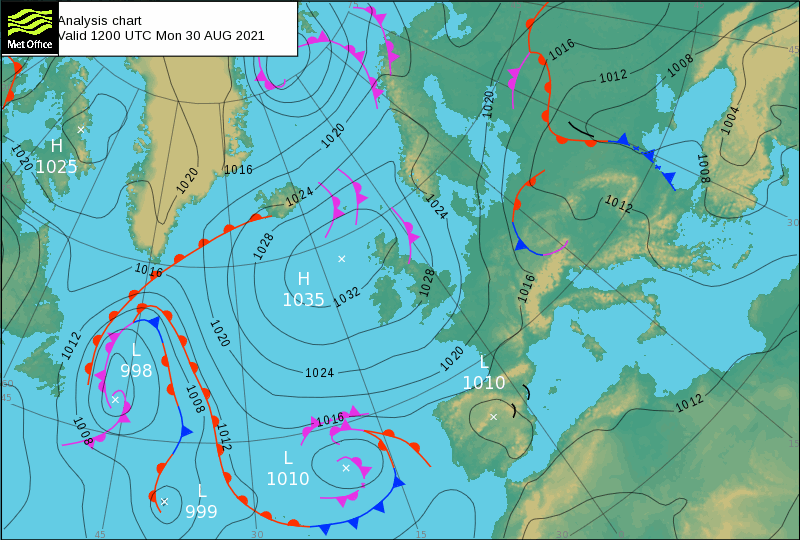
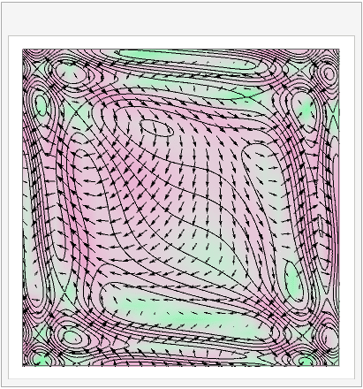

2. Mathematical ideas 2¶
In this section:
How are isosurfaces and isolines linked to the gradient?
What is a “stream function” and does every flow have one?
What is the “material derivative”?
2.1. The directional derivative¶
According to the multivariate chain rule for a function \(\phi(\underline{x})\), where \(\underline{x}=(x(s),y(s),z(s))\),
Using vectors, we can write this result as a scalar product:
where the gradient \(\nabla\phi\) is given by
Formula (2.2) looks strikingly similar to the one-dimensional chain rule, with the factor \(\nabla\phi\) capturing variations in \(\phi\) due to \(x\) and the second factor \(\underline{v}\) capturing variations in \(\underline{x}\) due to \(s\).
If we evaluate \(\nabla\phi\) at a given point \(\underline{x}_0\), the multivariate chain rule gives us the rate of change of \(\phi\) in direction \(\underline{v}\). Since the parameterisation \(\underline{x}(s)\) is arbitrary, we can choose a direction that we are interested in. This result is called the directional derivative. It is usually assumed that \(\underline{v}\) is a unit vector, so the result may be denoted as follows:
Exercise 2.1
Find the gradient of the function \(\phi(x,y,z)=xyz\) at the point \(\underline{x}_0:(-2,3,4)\).
What is the directional derivative of this function in the direction \(\hat{\underline{v}}=\frac{1}{13}(3,-4,12)\)?
2.2. What is a level set¶
A level set of a function \(\phi\) is defined by the following relationship, where \(c\) is a constant:
The main types of level set are surfaces and curves, as outlined below.
Level surfaces
The level sets of a function \(\phi(x,y,z)\) are generally surfaces, called isosurfaces. As an example, consider the pressure \(p(x,y,z)\) in a volume of water, exposed to atmospheric pressure \(p_0\) at the free surface. In this case, the boundary between the water and the air is an isosurface, defined by \(p(x,y,z)=p_0\). Choosing other values of the constant \(c>p_0\) will define other pressure isosurfaces within the body of water.
The image below shows four isosurfaces (including the free surface) during the early stages of evolution of a tsunami. The image was obtained by computational fluid dynmaic (CFD) simulation by researchers are ETH Zurich.
Level curves
The level sets of a function \(\phi(x,y)\) are generally curves, called isolines, isobars or contours. On a relief/elevation map the contours indicate the height of the topographic surface (e.g. hills). On a weather map isobars show the constant pressure boundaries over the topographic surface, as illustrated by the example below from the UK meteorological office.

{kind=link}
2.3. The gradient¶
The gradient is perpendicular to the level sets
Since level sets are defined by the relationship \(\phi=c\), differentiation gives \(\frac{\mathrm{d}\phi}{\mathrm{d}s}=0\). Using the result (2.2), we find that on a level set
Since \(\hat{\underline{v}}\) is parallel to the level sets of \(\phi\), the result result tells us that \(\nabla\phi\) is perpendicular to the level sets of \(\phi\).
The gradient points “uphill”
From the definition of the scalar product, we know that
where \(\theta\) is the angle between \(\nabla \phi\) and the direction vector \(\hat{\underline{v}}\).
The result is largest when \(\theta=0\). Therefore, \(\nabla \phi\) points in the direction of maximum increase of the function \(\phi\) and has magnitude equal to the rate of maximum increase.
Exercise 2.2
Some velocity fields, called potential fields, may be defined as the gradient of a scalar potential \(\phi(x,y,z)\). For example, the gravitational field \(\underline{g}=(0,0,-g)\) can be made to satisfy \(\underline{g}=\nabla\phi\) by taking \(\phi=-gz\).
Consider a two-dimensional velocity field \(\underline{v}=(u,v)\), which is defined by a potential function
Produce a vector plot of this field on the range \(-2\leq x,y \leq 2\).
On the same plot, illustrate some of the contours of the scalar potential.
The function needed to plot contours is part of the matplotlib library. Usage guidelines can be found here.
2.4. The stream function¶
The stream function is a useful tool that can be used to find the streamlines for some types of flow. It applies only to two-dimensional flows \(\underline{v}(x,y)\) that satisfy \(\nabla.\underline{v}=0\). The latter condition means that the fluid is incompressible. We will explore the incompressibility condition in later sections of the notes.
The stream function \(\psi(x,y)\) satisfies
The incompressibility condition \(\nabla.\underline{v}=0\) is required for consistency, due to the equivalence of the mixed second derivatives (Schwarz’ condition):
The stream function also satisfies \(\underline{v}.\nabla\psi=0\) :
Therefore, \(\nabla\psi\) is perpendicular to \(\underline{v}\), and so the contours of \(\psi\) are parallel to \(\underline{v}\).
In conclusion, the contours of \(\psi\) are streamlines of the flow.
Exercise 2.3
Find the stream function for the flow \(\underline{v}=\left(x^2y,-xy^2\right)\).
Use the stream function to produce a contour plot of the flow on \(-2\leq x,y\leq 2\).
Note: Some three-dimensional flows can also be treated as two-dimensional. This is the case for flows that are axisymmetric, meaning that they are symmetric about a given axis. An example of an axisymmetric flow is shown in the image below, which is from another CFD simulation produced using the commercial software COMSOL.

2.5. The material derivative¶
THIS SECTION NEEDS A REWRITE
According to the chain rule for an arbitrary function \(\phi(\underline{x},t)\),
If we put \(\frac{\mathrm{d}\underline{x}}{\mathrm{d}t}=\underline{v}\), which defines the path of a fluid element, then we obtain :
The differential operator \(\frac{D}{Dt}\) is called the “material derivative” or “convective derivative”.
The operator \(\underline{v}.\nabla\) gives the directional derivative tangent to \(\underline{v}\). It is often called convection, since it captures the motion/transfer arising due to the existence of the velocity field. For example, \(\underline{v}.\nabla\underline{v}\) is called convective acceleration. The term \(\frac{\partial \phi}{\partial t}\) accounts for…
An illustration of the idea is shown below.

{kind=link}
Suppose that a fluid particle follows the path marked in blue through the potential field \(\phi\), which is indicated by the background colour scheme and equipotential contours shown. The vectors (arrows) shown on the plot depict the instantaneous gradient field of \(\phi\). At each point on the trajectory, the experienced change in \(\phi\) is given by the projection of the particle’s own direction vector \(\underline{v}\) with the gradient field, \(\nabla \phi\), plus the instantaneous change in the potential field \(\phi\) at that point due to time evolution.
The material derivative can also be applied to each element of a vector field \(\underline{\phi}\), to give the change in \(\underline{\phi}\) following the motion of a fluid particle.
An interesting example description of these ideas can be found at https://www.youtube.com/watch?v=l4F2bZgwcpU
2.6. Solutions¶
Solution to : Exercise 2.1
\(\nabla f = \left(yz,xz,xy\right) \Rightarrow (\nabla f)_M=\left(12,-8,-6\right)\)
\(D_{\hat{\underline{v}}}f=\hat{\underline{v}}.(\nabla f)_M = \frac{1}{\sqrt{3^2+4^2+12^2}}\left(3,-4,12\right).\left(12,-8,-6\right)=\frac{-4}{13}\)